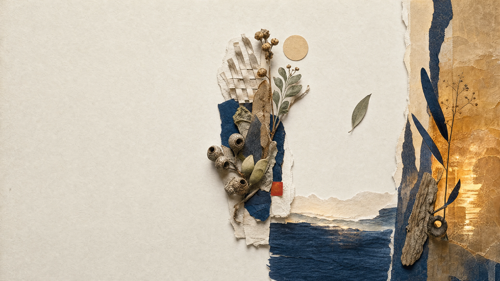

Confirmed
- Direction B was selected on 6 September.
- Eleven GPT Image 2 native masters plus the selected keyframe underpin the month.
- Every displayed image is a local review export with deterministic copy.
One useful Peninsula choice each week. Four commissions, twenty primary assets and one tactile Field Specimens visual system.

Two restrained Seedance 2.0 studies test whether light, depth and material movement can earn attention without changing the editorial claim. The source plates remain text-free; the live PI identity shown here is a deterministic review overlay.